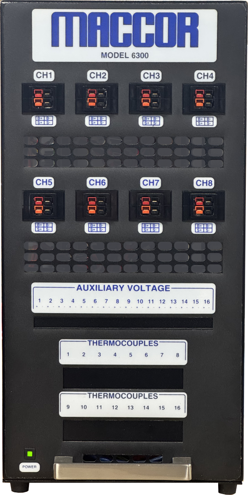

New

Series 6300
8-Channel Workhorse
The Series 6300 is the high-speed variant of the Series 4300, the trusted choice of scientists and researchers worldwide. Featuring unlimited waveform steps, 500 µs minimum step times, and 20 kHz data sampling, the Series 6300 delivers the performance and precision your most demanding applications require.
8 Channels
120A Max
1,200W Max
1 or 4 Ranges